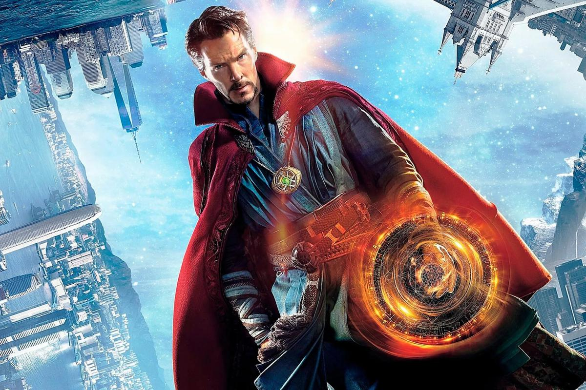
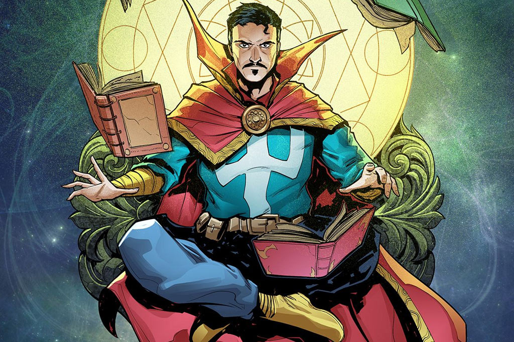
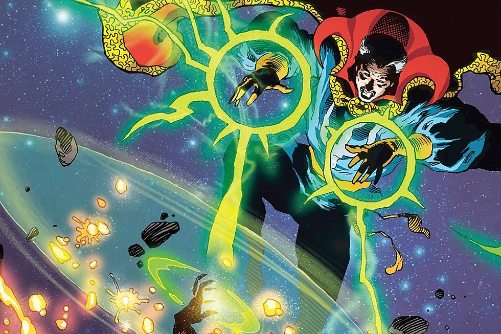
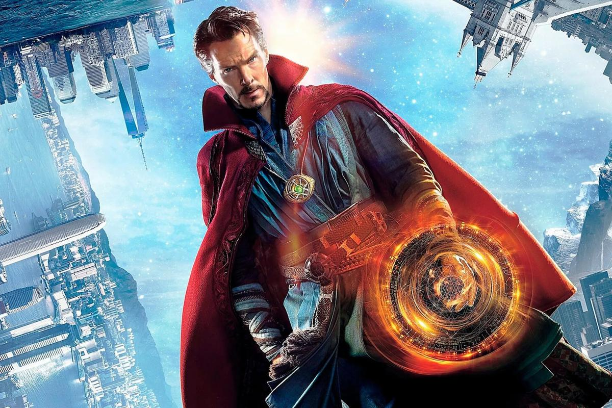
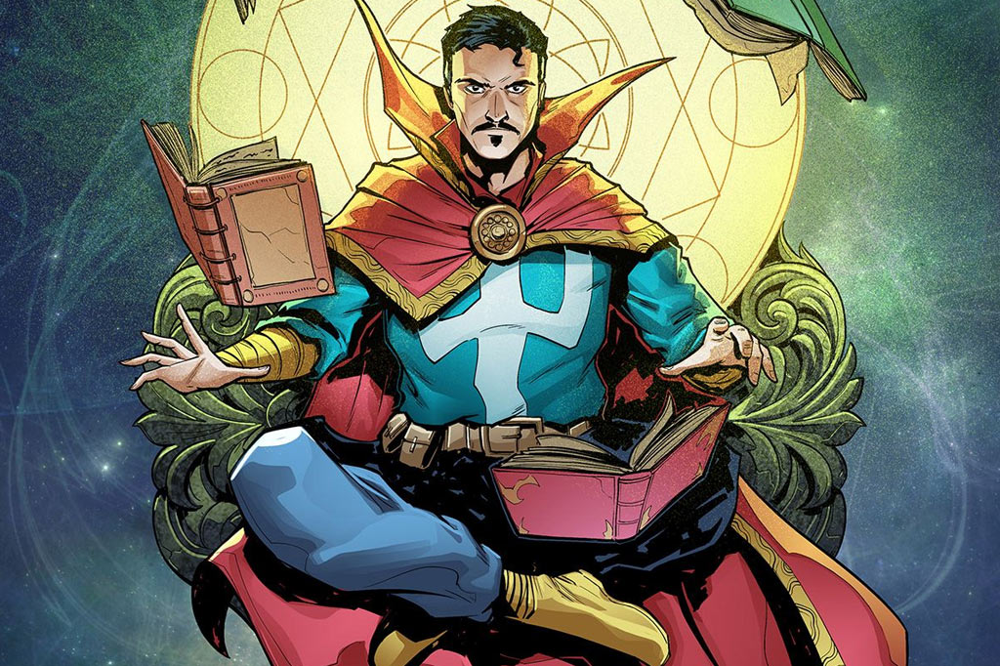
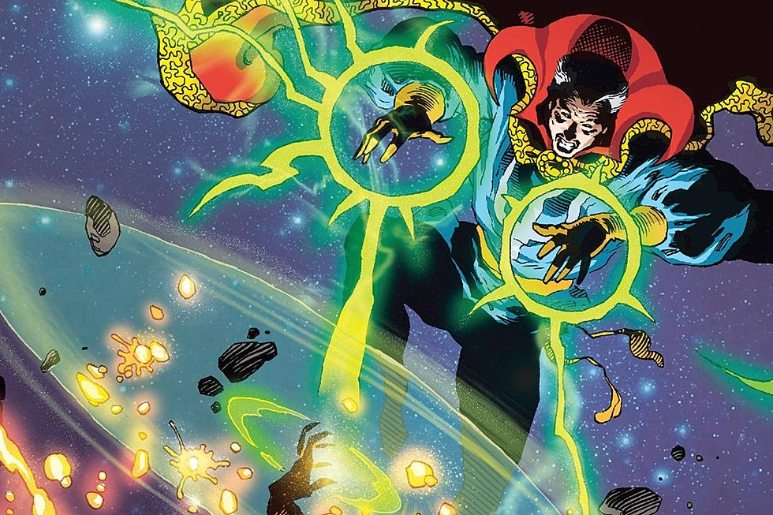

History
Doctor Stephen Vincent Strange is a powerful sorcerer and leading member of the Masters of the Mystic Arts. He was a successful and arrogant neurosurgeon, until a car accident severely damaged his hands,causing him to set out on a journey that took him to Kamar-Taj, where upon discovering magic and alternate dimensions, he was disturbed by the Ancient One and Karl Mordo.
Though his focus was healing his hands, Strange learned more about the mystical arts, and helped the Masters stop Kaecilius and the Zealots from merging Earth with Dormammu's Dark Dimension, at the cost of the Old One's death. With the loss of his mentor, Strange became the protector of the New York Sanctuary and Earth against interdimensional threats.
 




